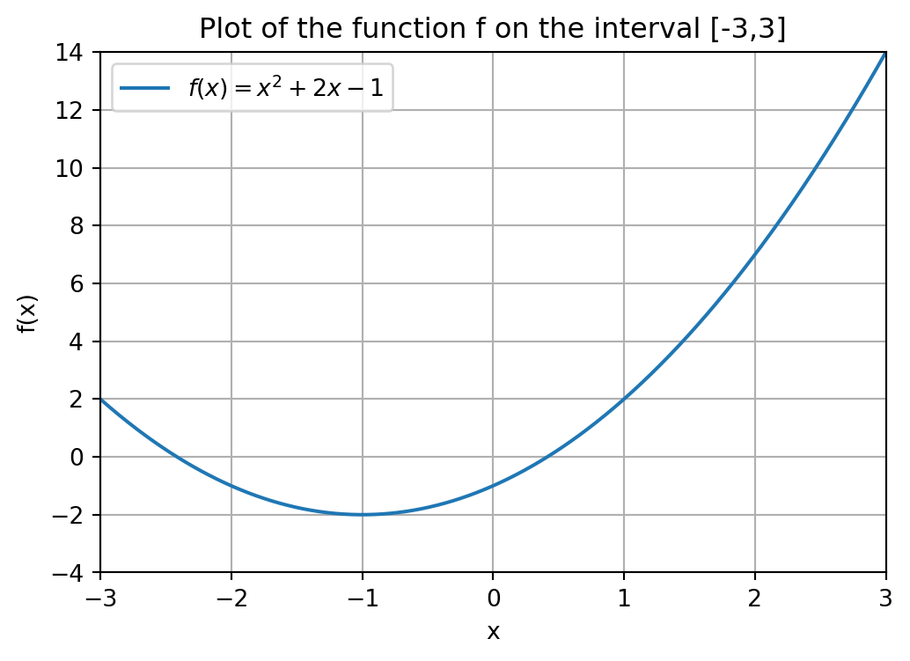
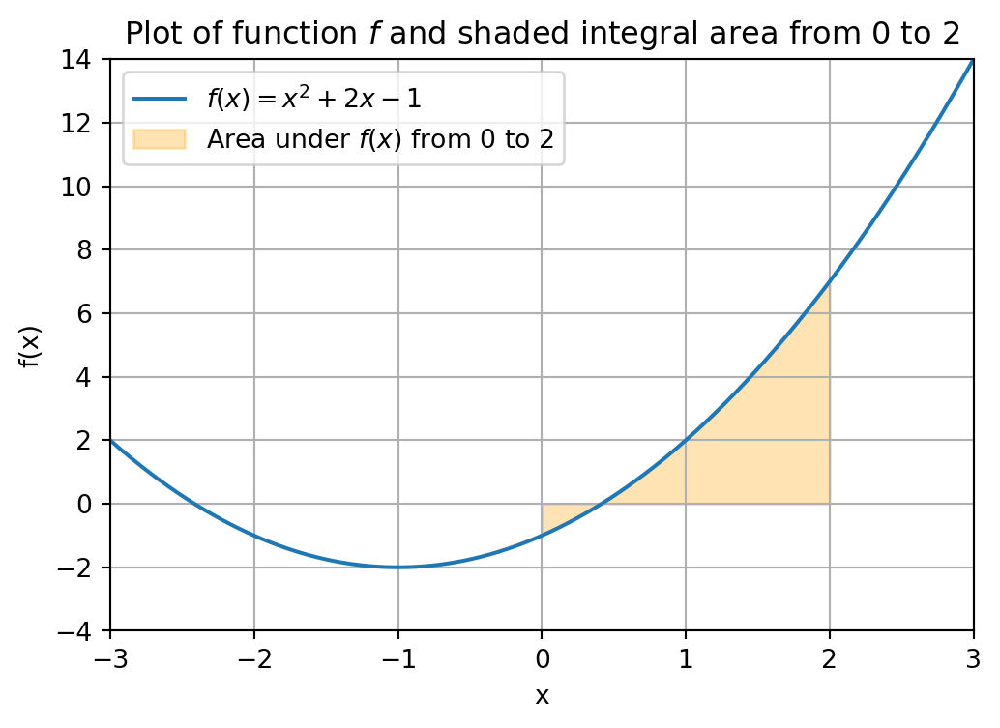

def f(x):
return x**2 + 2*x - 14 Math basics
In this chapter we will see some of the basic math functionality that Python has to offer. Many of these tasks can be carried out by your graphing calculator as well, but Python can also handle much more difficult problems that you will see in the course of you academic career.
We start with the basics of defining a function, such as a quadratic formula.
4.1 Python function
If we want to compute a certain mathematical expression for many different variables, it is often convenient to use a Python function for this.
For example, consider the quadratic function f(x) = x^2 + 2x^2 -1. Say we want to know the values of f(-3), f(-2.5), f(1) and f(4). What we would like to do is to ‘automate’ the computation of a function value, so that we do not have to write out the whole function everytime.
For this we can use a Python function for this as follows.
What does the code above do? First of all the syntax to tell Python we want to define a function called f that takes as input a number x is def f(x):.
We next have to tell Python what the function is supposed to compute. On the second line, with one tab indented, we have the return statement. Here we write down the expression that the function should return (or compute), which in our case is the function value f(x) = x^2 + 2x^2 -1.
We can now compute the function value f(x) for any value of x. What happens is that Python calls the function f with input the chosen value of x, and then returns the function value f(x), i.e., the expression in the return statement.
f(-2)-1f(1)2Note that you can also name the function differently, for example we could also have done def quadratic_function(x):. You should then use the name quadratic_function too in the command well you call the Python function to compute the function value f(x).
def quadratic_function(x):
return x**2 + 2*x - 1
quadratic_function(1)2Just as your graphing calculator we can plot a Python function, search for its roots, integrate a certain area under the curve and much more! More advanced tasks that Python can handle will introduced in later courses in the EOR bachelor program.
If you want to get a better understanding of the codes in the coming sections, you could already have a look at Chapter 9 of this course document of another course taught at the Tilburg School of Economics and Management. We do not explain the code here, but give it as a teaser what more is possible with Python!
4.2 Plotting
Consider again the function f(x) = x^2 + 2x - 1. A visualization of this function is given below. If you want to plot a function in Python you have to make use of functionality from NumPy and Matplotlib which are so-called Python packages.
Packages are functions written by other people to make our live easy, i.e., so that we do not have to write every code file from scratch in Python.
Show code generating the plot below
import numpy as np
import matplotlib.pyplot as plt
# Define the x range
x = np.linspace(-3, 3, 600)
# Define the function f
def f(x):
return x**2 + 2*x -1
# Create the plot
plt.figure(figsize=(6, 4))
plt.plot(x, f(x), label='$f(x) = x^2 + 2x - 1$')
# Add labels and title
plt.title('Plot of the function f on the interval [-3,3]')
plt.xlabel('x')
plt.ylabel('f(x)')
# Add a grid
plt.grid(True)
# Set range
plt.xlim(-3,3)
plt.ylim(-4,14)
# Add a legend
plt.legend()
# Show the plot
plt.show()
4.3 Root finding
Similarly, the SciPy package can be used to carry out various mathematical tasks and algorithms, making it very important for data analysis purposes.
The code below uses a pre-written Python function called fsolve() from SciPy to compute the roots of a function f. In other words, fsolve() is a mathematical algorithm for finding the root of a function, such as Newton’s method, that someone implemented in Python and made available publicly for the whole world to use. If you are interested in the source code of this function, you can look it up in the documentation of Python (more specifically, SciPy in this case).
import scipy.optimize as optimize
def f(x):
return x**2 + 2*x - 1
guess = 3
f_zero = optimize.fsolve(f,guess)
print("A root of the function f is given by", f_zero)A root of the function f is given by [0.41421356]The function fsolve() takes two inputs: a function of which we want to find a root, and an initial guess (3 in our case) of where the root is.
Entering an initial guess for where the root is located, is in some sense the equivalent of giving a bracket in which the root should lie on your graphing calculator. In fact, there are other root finding functions available in Python that work in this way, i.e., that require you to give an initial bracket, just as you do on your graphing calculator.
Different initial guesses might lead to different roots found by Python. In fact, as you can see the function f has two roots of which the above code finds the right one. We could find the left root by filling in a different initial guess, e.g., -3 instead of 3.
guess = -3
f_zero = optimize.fsolve(f,guess)
print("A root of the function f is given by", f_zero)A root of the function f is given by [-2.41421356]4.4 Integration
Finally, it is also possible to use built-in functionality from SciPy to integrate a function. Below we integrate the function f from 0 to 2. This integral area is illustrated in the figure below.
Show code generating the plot below
import numpy as np
import matplotlib.pyplot as plt
# Define the x range for the full plot
x = np.linspace(-3, 3, 600)
# Define the function f
def f(x):
return x**2 + 2*x - 1
# Create the plot
plt.figure(figsize=(6, 4))
plt.plot(x, f(x), label='$f(x) = x^2 + 2x - 1$')
# Define the interval for shading (0 to 2)
x_fill = np.linspace(0, 2, 300)
plt.fill_between(x_fill, f(x_fill), alpha=0.3, color='orange',
label='Area under $f(x)$ from 0 to 2')
# Add labels and title
plt.title('Plot of function $f$ and shaded integral area from 0 to 2')
plt.xlabel('x')
plt.ylabel('f(x)')
# Add a grid
plt.grid(True)
# Set axis limits
plt.xlim(-3, 3)
plt.ylim(-4, 14)
# Add a legend
plt.legend()
# Show the plot
plt.show()
from scipy.integrate import quad
# Define the function to integrate
def f(x):
return x**2 + 2*x - 1
# Perform the integration from 0 to 2
result, error = quad(f, 0, 2)
# Print the result
print("Integral of f(x) from 0 to 2 is:", result)
print("Numerical error in integral computation is at most", error)Integral of f(x) from 0 to 2 is: 4.666666666666666
Numerical error in integral computation is at most 5.666271351443603e-144.5 Why Python and not my calculator?
So far we have illustrated task with Python that you graphing calculator can also carry out. The advantage of Python is that it can handle much more complicated computing tasks and handle much more difficult mathematical functions, that your graphing calculator is not able to handle.
Many of these tasks you will come across in various courses of the EOR bachelor program, already starting with the course Linear Optimization in the second quartile of year 1.
Furthermore, throught the EOR bachelor program you will also see some other programming languages such as R and Matlab. Many of the general programming ideas, such as for-loops and conditional statements, exist in those languages as well, but sometimes the syntax (i.e., the grammar of the programming language) is different than that of Python.